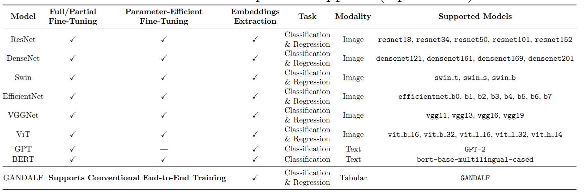

Welcome to Deeptune’s documentation!
DeepTune is a full compatible library to automate Computer Vision, and Natural Language Processing, state-of-the-art algorithms on diverse images and text datasets. The library is designed for use in different applied machine learning domains, including but not limited to medical imaging, and natural language understanding, providing users with powerful, ready-to-use CLI tool that unlock the full potential of their case studies through just a few simple commands.
Check out the Installation section for further information, including how to install the library.
GitHub repository can be accessed through the following link: https://github.com/moayadeldin/deeptune
Note
This project is under active development.
Main Features
Fine-tuning state-of-the-art Computer Vision algorithms (ResNet, DenseNet, etc.) for image classification.
Fine-tuning state-of-the-art NLP (BERT, GPT-2) algorithms for text classification.
End-to-end training for tabular and time-series algorithms (time-series is temporarily disabled; scheduled for re-release soon).
Enabled parameter-efficient fine-tuning of state-of-the-art vision and NLP models using PEFT with LoRA, reducing computational cost while maintaining high performance.
Leveraged fine-tuned and pretrained state-of-the-art vision and language models to generate robust knowledge representations for downstream visual and textual tasks.
DeepTune Supported Models
{kind=link}
Contents
User Guide
Acknowledgements
This software package was developed as part of work done by Moayadeldin Hussain at Medical Imaging Bioinformatics lab under the supervision of Jacob Levman at St. Francis Xavier Univeristy, Nova Scotia, Canada.
Citation
If you find DeepTune useful in your research, support us with a star 💫 on the GitHub repo.
If you make use of DeepTune, please cite the repository as follows:
@software{DeepTune,
author = {Moayadeldin Hussain and John Kendall and Jacob Levman},
title = {DeepTune: Cutting-edge library to automate Computer Vision and Natural Language Processing algorithms},
year = {2025},
url = {https://github.com/moayadeldin/deeptune},
version = {1.1.0}
}